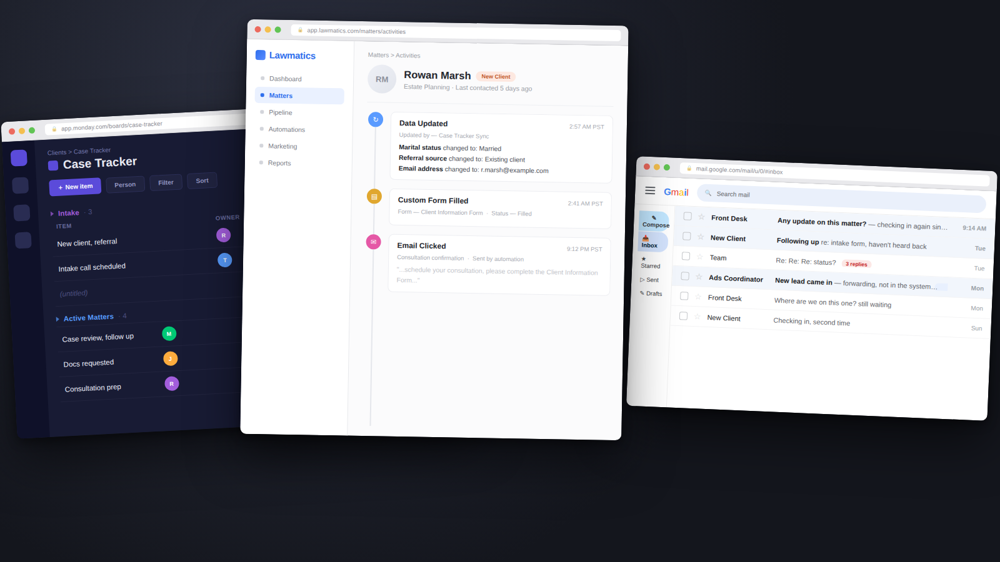

A law firm's online and offline teams stopped guessing once Monday.com and Lawmatics finally told the same story.
Stuck between two systems.
The firm was running Monday.com and Lawmatics side by side, but neither told the same story. The online team worked one system, the offline team worked the other, and status lived wherever someone last updated it by hand.

Audit before automate.
Before building anything new, both systems got audited on their own terms, then mapped against where online and offline work actually had to meet.
Traced every existing automation to find where it was silently failing.
Mapped what the offline team actually needed visibility into, day to day.
Traced the full path from lead to intake to case, online team to offline team.
Planned how Zapier and Make would keep both systems in sync going forward.
The firm wasn't short on effort, it was short on one system both teams could trust.
Underneath it, 3 operational gaps.
5 moves, one shared system.
The system of record could finally be trusted.
The firm's Lawmatics automations were misfiring, silently breaking workflows the team depended on without anyone noticing until something fell through. Those were rebuilt from the ground up before anything else touched the system, so every automation downstream had a foundation that actually worked.
The case and client side became visible at a glance.
With the automations fixed, the CRM's data was finally trustworthy enough to build reporting on top of. New dashboards gave the online team, and leadership, a real-time view into where every case actually stood, instead of clicking through individual records to find out.
The offline team stopped chasing status by hand.
On the operations side, Monday.com automations took over the manual handoffs and status updates that used to depend on someone remembering to do them, so work moved forward without a person having to push it at every step.
The offline team got the same visibility the online team now had.
A matching set of dashboards went up on Monday.com, giving the operations side of the business the same real-time view Lawmatics now gave the case side, so both teams were finally looking at the same picture instead of two separate ones.
Online and offline finally ran off the same data.
Zapier and Make became the connective layer between Monday.com and Lawmatics, so an update in one system reflected in the other automatically. Dropbox, where all of the firm's documents lived, was wired into that same layer, so files stayed tied to the right case without anyone moving them by hand. The ads team was folded into the same system too, so marketing activity fed directly into intake instead of running in its own disconnected corner.
What changed, once both systems agreed.
Fewer manual status updates chased down each week.
Case handoffs now moving without manual follow-up.
Monday.com and Lawmatics now show the same picture, in real time.
Audited Lawmatics and Monday.com, fixed the broken Lawmatics automations.
Built dashboards on both systems and new Monday.com automations.
Connected both systems via Zapier and Make, added Dropbox and ads coordination.
From chasing status across two systems that never agreed, to one shared view the whole team works from.
"[One specific line about what it felt like once both systems finally agreed. The real moment, not a summary.]"
A referral-based firm runs on trust, and trust breaks the moment two systems stop agreeing with each other.
If your team is split across tools that don't talk to each other, that's not a tooling problem, it's a systems problem, and it's fixable.
Book a discovery call →